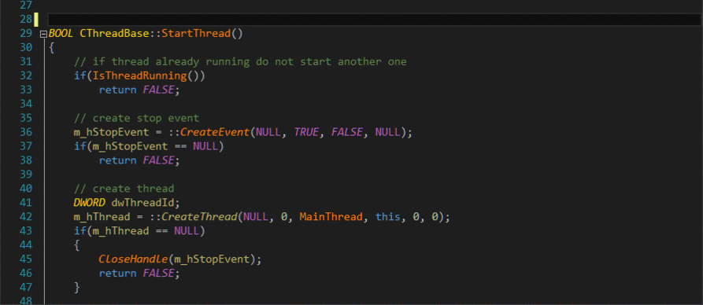
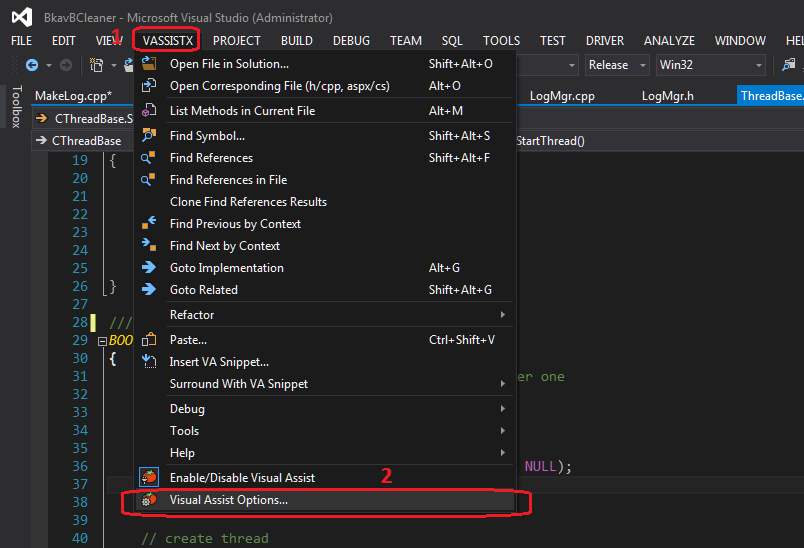
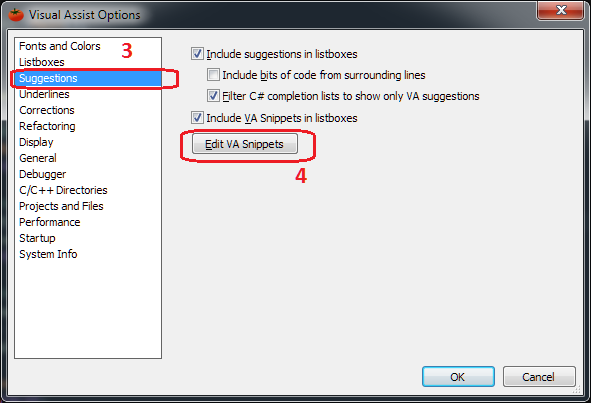
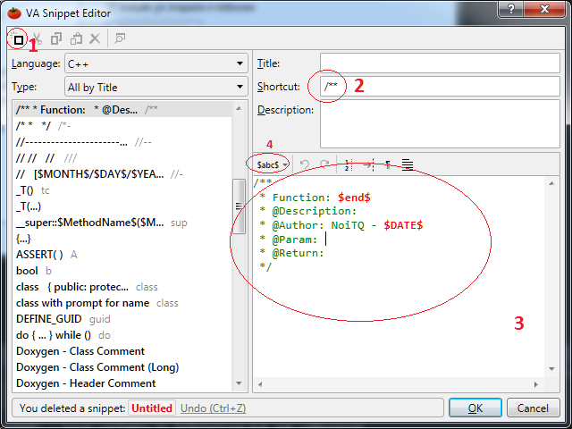
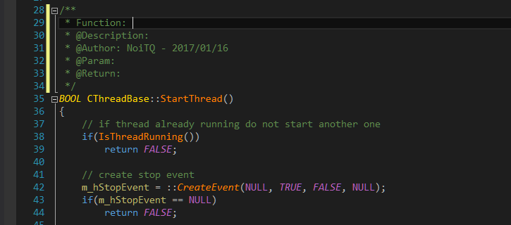

Code nhanh hơn với VA Snippets của Visual Assist X trong Visual Studio
Plugin Visual Assist X thần thánh
Như các bạn đã biết Visual Assist X là một Plugin rất mạnh mẽ dùng cho Microsoft Visual Studio.
Visual Assist X giúp cho việc hiển thị rõ ràng các từ khóa của ngôn ngữ lập trình(thông qua màu sắc của các biến, kiểu dữ liệu, hàm, từ khoá..).
Visual Assist X cung cấp khả năng đề xuất code, refactoring code, tự động điền tên biến, tên hàm chỉ sau khi gõ 1 vài ký tự, hiển thị các prototype của một hàm. Tìm kiếm các reference của hàm, biết một cách chi tiết giúp lập trình viên có thể thao tác, review code thuận tiện.
Đó là các chức năng nổi tiếng chắc ai cũng biết. Hôm nay mình sẽ giới thiệu cho các bạn một chức năng nhỏ của Visual Assist có thể ít người để ý đến. Nhưng khi biết chức năng này, bạn sẽ tạo ra các comment nhanh hơn, đẹp hơn và giảm các thao tác lặp đi lặp lại đó chính là chức năng VA Snippets.
Chức năng Snippet của Vissual Assist X
Chức năng này cơ chế ngắn gọn như sau: bạn tạo ra một snippett có shortcut gán với một đoạn code nào đó muốn sinh ra. Sử dụng bằng cách chỉ cần việc gõ shortcut, ngay lập tức VA hiển thị gợi ý ra code đó. Bạn chỉ cần Enter là có ngay code đó.

Cách thêm hoặc sửa một snippet trong Visual Assist X
Để thêm hoặc sửa các snippet đã có sẵn bạn vào menu VASSISX -> Visual Assist Options…

Trong hộp thoại Visual Assist Options chọ mục Suggestions và chọn Edit VA Snippets.

Hộp thoại VA Snippet Editor xuất hiện:

Clink vào (1) để thêm mới hoặc chọn 1 trong các mục ở danh sách các snippet ở dưới để sửa.
Ở mục (2) là điền shortcut, như hình ví dụ mình chọn là /** . Ở mục (3) là điền code cần tạo ra. Ở đây mình chọn sinh ra một mẫu comment đầu hàm mà mình hay dùng.
Một điều hay ho ở snippet khiến mình thấy thích thú đó là các biến mà VA cung cấp ở mục (4). VA cung cấp rất nhiều biến như ngày tháng, tên file, tab…
Ở đây ví dụ mình chọn biến $DATE$ để hiển thị ngày tháng hiện tại, biến $end$ để sau khi sinh ra code thì con trỏ chuột đặt vào vị trí đó để mình thêm thông tin.
Kết quả sau khi chỉ gõ shortcut và ấn enter:

Đối với mình sử dụng chức năng này sẽ giúp mình bớt nhàm chán khi phải gõ đi gõ lại trong những đoạn code không cần thiết trong khi mình muốn tập trung vào code chính. Những kỹ năng nho nhỏ như thế này hi vọng sẽ giúp bạn code cool hơn.
Nếu thấy hay ho và có ích hãy like và share giúp mình hoặc comment nhữ kỹ năng mà bạn biết thêm ở dưới nhé!